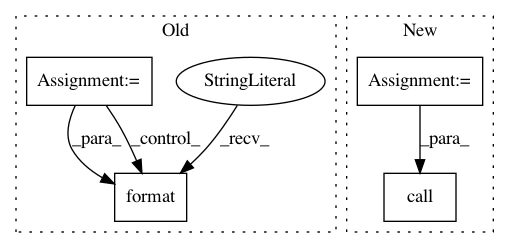

164b392ce45a1baa7523212c451fa3d20cb06450,setup.py,,main,#,64
Before Change
reqFilePath = os.path.join(setupHome, "requirements.txt")
if os.path.isfile(reqFilePath):
reqItems = [line.strip() for line in open(reqFilePath)]
for r in reqItems:
log("Installing package: {0}".format(r))
subprocess.call([pipExePath, "install", "-U", "--upgrade", r])
else:
die("Dependency listing file not found: {0}".format(reqFilePath), 7)
except:
die("Dependency installation failed!", 6)
After Change
pipExePath = os.path.join(os.path.dirname(sys.executable), r"Scripts\pip.exe")
setupHome = os.path.join(os.path.abspath(os.path.dirname(__file__)), "scripts")
distHome = os.path.join(os.path.abspath(os.path.dirname(__file__)), "dist")
try:
arcpy = __import__("arcpy")
info = arcpy.GetInstallInfo()
if tuple(map(int, (info["Version"].split(".")))) < tuple(map(int, ("10.3.1".split(".")))):
raise Exception("No ArcGIS")
except:
die("Unable to find ArcGIS 10.3.1 or above. Cannot proceed.", 99)
try:
log("Installing PIP")
pipPyPath = os.path.join(setupHome, "get-pip.py")
locateFile(pipURL, pipPyPath)
subprocess.call([sys.executable, pipPyPath])
if os.path.isfile(pipExePath):
log("PIP installed successfully")
else:
raise Exception("PIP failed")
subprocess.call([pipExePath, "install", "--upgrade", "pip"])
subprocess.call([pipExePath, "install", "--upgrade", "wheel"])
except:
die("PIP installation failed!", 1)
try:
if sys.version_info[0] == 2:
log("Installing Microsoft Visual C++ Compiler")
vcSetupPath = os.path.join(distHome, "VCForPython27.msi")
locateFile(vcURL, vcSetupPath)
c = ["msiexec", "/i", vcSetupPath, "/qb-"]
log("Executing: {0}".format(" ".join(c)))
subprocess.call(c)
log("C++ Compiler for Python installed successfully")
except:
die("VC++ Compiler for Python installation failed!.", 4)
try:
log("Installing Python dependencies")
reqFilePath = os.path.join(setupHome, "requirements.txt")
if not os.path.isfile(reqFilePath):
die("Dependency listing file not found: {0}".format(reqFilePath), 5)
c = [pipExePath, "install", "--find-links={0}".format(distHome), "-r", reqFilePath]
log("Executing: {0}".format(" ".join(c)))
subprocess.call(c)
except:
die("Dependency installation failed!", 6)
In pattern: SUPERPATTERN
Frequency: 3
Non-data size: 4
Instances
Project Name: Esri/raster-functions
Commit Name: 164b392ce45a1baa7523212c451fa3d20cb06450
Time: 2015-05-21
Author: akferoz@esri.com
File Name: setup.py
Class Name:
Method Name: main
Project Name: pantsbuild/pants
Commit Name: 02601118f6edf725e64e2471def69e0114ae3845
Time: 2015-02-02
Author: mateorod9@gmail.com
File Name: src/python/pants/backend/android/tasks/aapt_builder.py
Class Name: AaptBuilder
Method Name: execute
Project Name: pantsbuild/pants
Commit Name: 02601118f6edf725e64e2471def69e0114ae3845
Time: 2015-02-02
Author: mateorod9@gmail.com
File Name: src/python/pants/backend/android/tasks/aapt_gen.py
Class Name: AaptGen
Method Name: genlang